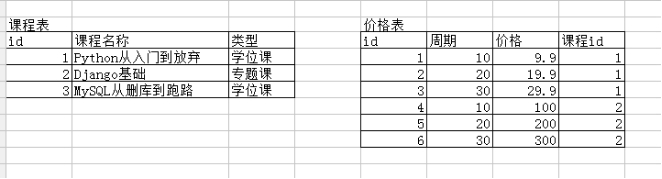
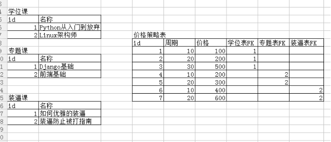
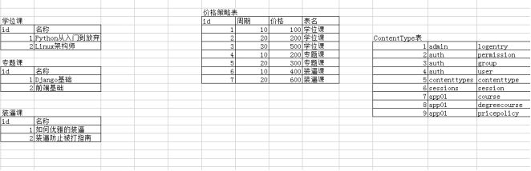
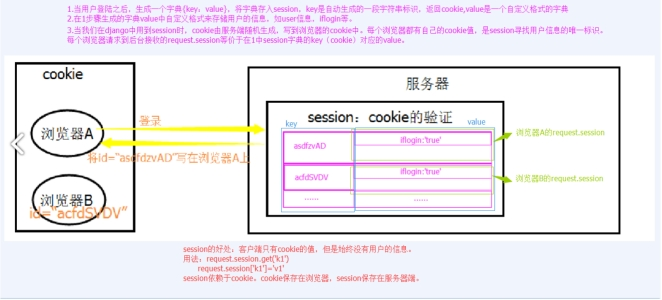

一、分页器组件 1 2 3 4 5 6 7 8 9 10 11 12 13 14 15 16 17 18 19 20 21 22 23 24 25 26 27 28 29 30 31 32 33 34 35 36 37 38 39 40 41 42 43 44 45 46 47 48 49 50 51 52 53 54 55 56 57 58 59 60 61 62 63 64 65 66 67 68 69 70 71 72 73 74 75 76 77 78 79 80 81 82 83 84 85 86 87 88 89 90 91 92 93 94 95 96 97 98 99 100 101 102 103 104 105 class Pagination (object ): def __init__ (self,current_page,all_count,per_page_num=2 ,pager_count=11 ): """ 封装分页相关数据 :param current_page: 当前页 :param all_count: 数据库中的数据总条数 :param per_page_num: 每页显示的数据条数 :param pager_count: 最多显示的页码个数 用法: queryset = model.objects.all() page_obj = Pagination(current_page,all_count) page_data = queryset[page_obj.start:page_obj.end] 获取数据用page_data而不再使用原始的queryset 获取前端分页样式用page_obj.page_html """ try : current_page = int (current_page) except Exception as e: current_page = 1 if current_page <1 : current_page = 1 self.current_page = current_page self.all_count = all_count self.per_page_num = per_page_num all_pager, tmp = divmod (all_count, per_page_num) if tmp: all_pager += 1 self.all_pager = all_pager self.pager_count = pager_count self.pager_count_half = int ((pager_count - 1 ) / 2 ) @property def start (self ): return (self.current_page - 1 ) * self.per_page_num @property def end (self ): return self.current_page * self.per_page_num def page_html (self ): if self.all_pager <= self.pager_count: pager_start = 1 pager_end = self.all_pager + 1 else : if self.current_page <= self.pager_count_half: pager_start = 1 pager_end = self.pager_count + 1 else : if (self.current_page + self.pager_count_half) > self.all_pager: pager_end = self.all_pager + 1 pager_start = self.all_pager - self.pager_count + 1 else : pager_start = self.current_page - self.pager_count_half pager_end = self.current_page + self.pager_count_half + 1 page_html_list = [] page_html_list.append(''' <nav aria-label='Page navigation>' <ul class='pagination'> ''' ) first_page = '<li><a href="?page=%s">首页</a></li>' % (1 ) page_html_list.append(first_page) if self.current_page <= 1 : prev_page = '<li class="disabled"><a href="#">上一页</a></li>' else : prev_page = '<li><a href="?page=%s">上一页</a></li>' % (self.current_page - 1 ,) page_html_list.append(prev_page) for i in range (pager_start, pager_end): if i == self.current_page: temp = '<li class="active"><a href="?page=%s">%s</a></li>' % (i, i,) else : temp = '<li><a href="?page=%s">%s</a></li>' % (i, i,) page_html_list.append(temp) if self.current_page >= self.all_pager: next_page = '<li class="disabled"><a href="#">下一页</a></li>' else : next_page = '<li><a href="?page=%s">下一页</a></li>' % (self.current_page + 1 ,) page_html_list.append(next_page) last_page = '<li><a href="?page=%s">尾页</a></li>' % (self.all_pager,) page_html_list.append(last_page) page_html_list.append(''' </nav> </ul> ''' ) return '' .join(page_html_list)
1、介绍 我们之前在HTML页面中利用form表单向后端提交数据时，都会写一些获取用户输入的标签并且用form标签把它们包起来。
与此同时我们在好多场景下都需要对用户的输入做校验，比如校验用户是否输入，输入的长度和格式等正不正确。如果用户输入的内容有错误就需要在页面上相应的位置显示对应的错误信息.。
Django form组件就实现了上面所述的功能。
总结一下，其实form组件的主要功能如下:
生成页面可用的HTML标签
对用户提交的数据进行校验
保留上次输入内容 2、普通方式手写注册功能 views.py
1 2 3 4 5 6 7 8 9 10 11 12 13 14 def register (request ): error_msg = "" if request.method == "POST" : username = request.POST.get("name" ) pwd = request.POST.get("pwd" ) if len (username) < 6 : error_msg = "用户名长度不能小于6位" else : return HttpResponse("注册成功" ) return render(request, "register.html" , {"error_msg" : error_msg})
login.html
1 2 3 4 5 6 7 8 9 10 11 12 13 14 15 16 17 18 19 20 21 22 23 24 <!DOCTYPE html> <html lang="en" > <head> <meta charset="UTF-8" > <title>注册页面</title> </head> <body> <form action="/reg/" method="post" > {% csrf_token %} <p> 用户名: <input type ="text" name="name" > </p> <p> 密码： <input type ="password" name="pwd" > </p> <p> <input type ="submit" value="注册" > <p style="color: red" >{{ error_msg }}</p> </p> </form> </body> </html>
views.py
先定义好一个RegForm类：
1 2 3 4 5 from django import formsclass RegForm (forms.Form): name = forms.CharField(label="用户名" ) pwd = forms.CharField(label="密码" )
再写一个视图函数：
1 2 3 4 5 6 7 8 9 10 def register2 (request ): form_obj = RegForm() if request.method == "POST" : form_obj = RegForm(request.POST) if form_obj.is_valid(): return HttpResponse("注册成功" ) return render(request, "register2.html" , {"form_obj" : form_obj})
login2.html
1 2 3 4 5 6 7 8 9 10 11 12 13 14 15 16 17 18 19 20 21 22 23 <!DOCTYPE html> <html lang="en" > <head> <meta charset="UTF-8" > <title>注册2 </title> </head> <body> <form action="/reg2/" method="post" novalidate autocomplete="off" > {% csrf_token %} <div> <label for ="{{ form_obj.name.id_for_label }}" >{{ form_obj.name.label }}</label> {{ form_obj.name }} {{ form_obj.name.errors.0 }} </div> <div> <label for ="{{ form_obj.pwd.id_for_label }}" >{{ form_obj.pwd.label }}</label> {{ form_obj.pwd }} {{ form_obj.pwd.errors.0 }} </div> <div> <input type ="submit" class ="btn btn-success" value="注册" > </div> </form> </body> </html>
看网页效果发现 也验证了form的功能：
• 前端页面是form类的对象生成的 –>生成HTML标签功能
• 当用户名和密码输入为空或输错之后 页面都会提示 –>用户提交校验功能
• 当用户输错之后 再次输入 上次的内容还保留在input框 –>保留上次输入内容
4、常用字段与插件 创建Form类时，主要涉及到 【字段】 和 【插件】，字段用于对用户请求数据的验证，插件用于自动生成HTML;
initial
初始值，input框里面的初始值。
1 2 3 4 5 6 7 class LoginForm (forms.Form): username = forms.CharField( min_length=8 , label="用户名" , initial="张三" ) pwd = forms.CharField(min_length=6 , label="密码" )
error_messages
重写错误信息。
1 2 3 4 5 6 7 8 9 10 11 12 class LoginForm (forms.Form): username = forms.CharField( min_length=8 , label="用户名" , initial="张三" , error_messages={ "required" : "不能为空" , "invalid" : "格式错误" , "min_length" : "用户名最短8位" } ) pwd = forms.CharField(min_length=6 , label="密码" )
password
class LoginForm(forms.Form):
1 2 3 4 5 6 ... pwd = forms.CharField( min_length=6 , label="密码" , widget=forms.widgets.PasswordInput(attrs={'class' : 'c1' }, render_value=True ) )
radioSelect
单radio值为字符串
1 2 3 4 5 6 7 8 9 10 11 12 13 14 15 16 17 18 class LoginForm (forms.Form): username = forms.CharField( min_length=8 , label="用户名" , initial="张三" , error_messages={ "required" : "不能为空" , "invalid" : "格式错误" , "min_length" : "用户名最短8位" } ) pwd = forms.CharField(min_length=6 , label="密码" ) gender = forms.fields.ChoiceField( choices=((1 , "男" ), (2 , "女" ), (3 , "保密" )), label="性别" , initial=3 , widget=forms.widgets.RadioSelect() )
单选Select
1 2 3 4 5 6 7 8 class LoginForm (forms.Form): ... hobby = forms.ChoiceField( choices=((1 , "篮球" ), (2 , "足球" ), (3 , "双色球" ), ), label="爱好" , initial=3 , widget=forms.widgets.Select() )
多选Select
1 2 3 4 5 6 7 8 class LoginForm (forms.Form): ... hobby = forms.MultipleChoiceField( choices=((1 , "篮球" ), (2 , "足球" ), (3 , "双色球" ), ), label="爱好" , initial=[1 , 3 ], widget=forms.widgets.SelectMultiple() )
单选checkbox
1 2 3 4 5 6 7 class LoginForm (forms.Form): ... keep = forms.ChoiceField( label="是否记住密码" , initial="checked" , widget=forms.widgets.CheckboxInput() )
多选checkbox
1 2 3 4 5 6 7 8 class LoginForm (forms.Form): ... hobby = forms.MultipleChoiceField( choices=((1 , "篮球" ), (2 , "足球" ), (3 , "双色球" ),), label="爱好" , initial=[1 , 3 ], widget=forms.widgets.CheckboxSelectMultiple() )
choice字段注意事项
在使用选择标签时，需要注意choices的选项可以配置从数据库中获取，但是由于是静态字段 获取的值无法实时更新，需要重写构造方法从而实现choice实时更新。
方式一：
1 2 3 4 5 6 7 8 9 10 11 12 13 14 15 16 17 from django.forms import Formfrom django.forms import widgetsfrom django.forms import fields class MyForm (Form ): user = fields.ChoiceField( initial=2 , widget=widgets.Select ) def __init__ (self, *args, **kwargs ): super (MyForm,self).__init__(*args, **kwargs) self.fields['user' ].choices = models.Classes.objects.all ().values_list('id' ,'caption' )
方式二：
1 2 3 4 5 6 7 from django import formsfrom django.forms import fieldsfrom django.forms import models as form_model class FInfo (forms.Form): authors = form_model.ModelMultipleChoiceField(queryset=models.NNewType.objects.all ())
5、字段校验 1.RegexValidator验证器 1 2 3 4 5 6 7 8 9 from django.forms import Formfrom django.forms import widgetsfrom django.forms import fieldsfrom django.core.validators import RegexValidator class MyForm (Form ): user = fields.CharField( validators=[RegexValidator(r'^[0-9]+$' , '请输入数字' ), RegexValidator(r'^159[0-9]+$' , '数字必须以159开头' )], )
自定义验证函数
1 2 3 4 5 6 7 8 9 10 11 12 13 14 15 16 17 18 19 20 21 22 23 24 25 26 27 28 29 30 31 import refrom django.forms import Formfrom django.forms import widgetsfrom django.forms import fieldsfrom django.core.exceptions import ValidationError def mobile_validate (value ): mobile_re = re.compile (r'^(13[0-9]|15[012356789]|17[678]|18[0-9]|14[57])[0-9]{8}$' ) if not mobile_re.match(value): raise ValidationError('手机号码格式错误' ) class PublishForm (Form ): title = fields.CharField(max_length=20 , min_length=5 , error_messages={'required' : '标题不能为空' , 'min_length' : '标题最少为5个字符' , 'max_length' : '标题最多为20个字符' }, widget=widgets.TextInput(attrs={'class' : "form-control" , 'placeholder' : '标题5-20个字符' })) phone = fields.CharField(validators=[mobile_validate, ], error_messages={'required' : '手机不能为空' }, widget=widgets.TextInput(attrs={'class' : "form-control" , 'placeholder' : u'手机号码' })) email = fields.EmailField(required=False , error_messages={'required' : u'邮箱不能为空' ,'invalid' : u'邮箱格式错误' }, widget=widgets.TextInput(attrs={'class' : "form-control" , 'placeholder' : u'邮箱' }))
2. Hook方法 除了上面两种方式，我们还可以在Form类中定义钩子函数，来实现自定义的验证功能。
局部钩子
我们在Fom类中定义 clean_字段名() 方法，就能够实现对特定字段进行校验。
举个例子：
1 2 3 4 5 6 7 8 9 10 11 12 13 14 15 16 17 18 19 20 class LoginForm (forms.Form): username = forms.CharField( min_length=8 , label="用户名" , initial="张三" , error_messages={ "required" : "不能为空" , "invalid" : "格式错误" , "min_length" : "用户名最短8位" }, widget=forms.widgets.TextInput(attrs={"class" : "form-control" }) ) ... def clean_username (self ): value = self.cleaned_data.get("username" ) if "666" in value: raise ValidationError("光喊666是不行的" ) else : return value
全局钩子
我们在Fom类中定义 clean() 方法，就能够实现对字段进行全局校验。
1 2 3 4 5 6 7 8 9 10 11 12 13 14 15 16 17 18 19 20 21 22 class LoginForm (forms.Form): ... password = forms.CharField( min_length=6 , label="密码" , widget=forms.widgets.PasswordInput(attrs={'class' : 'form-control' }, render_value=True ) ) re_password = forms.CharField( min_length=6 , label="确认密码" , widget=forms.widgets.PasswordInput(attrs={'class' : 'form-control' }, render_value=True ) ) ... def clean (self ): password_value = self.cleaned_data.get('password' ) re_password_value = self.cleaned_data.get('re_password' ) if password_value == re_password_value: return self.cleaned_data else : self.add_error('re_password' , '两次密码不一致' ) raise ValidationError('两次密码不一致' )
6、补充 1.应用Bootstrap样式 1 2 3 4 5 6 7 8 9 10 11 12 13 14 15 16 17 18 19 20 21 22 23 24 25 26 27 28 29 30 31 32 33 34 35 36 37 38 39 40 41 42 43 44 45 46 47 48 49 50 51 52 53 54 <!DOCTYPE html> <html lang="en" > <head> <meta charset="UTF-8" > <meta http-equiv="x-ua-compatible" content="IE=edge" > <meta name="viewport" content="width=device-width, initial-scale=1" > <link rel="stylesheet" href="/static/bootstrap/css/bootstrap.min.css" > <title>login</title> </head> <body> <div class ="container" > <div class ="row" > <form action="/login2/" method="post" novalidate class ="form-horizontal" > {% csrf_token %} <div class ="form-group" > <label for ="{{ form_obj.username.id_for_label }}" class ="col-md-2 control-label" >{{ form_obj.username.label }}</label> <div class ="col-md-10" > {{ form_obj.username }} <span class ="help-block" >{{ form_obj.username.errors.0 }}</span> </div> </div> <div class ="form-group" > <label for ="{{ form_obj.pwd.id_for_label }}" class ="col-md-2 control-label" >{{ form_obj.pwd.label }}</label> <div class ="col-md-10" > {{ form_obj.pwd }} <span class ="help-block" >{{ form_obj.pwd.errors.0 }}</span> </div> </div> <div class ="form-group" > <label class ="col-md-2 control-label" >{{ form_obj.gender.label }}</label> <div class ="col-md-10" > <div class ="radio" > {% for radio in form_obj.gender %} <label for ="{{ radio.id_for_label }}" > {{ radio.tag }}{{ radio.choice_label }} </label> {% endfor %} </div> </div> </div> <div class ="form-group" > <div class ="col-md-offset-2 col-md-10" > <button type ="submit" class ="btn btn-default" >注册</button> </div> </div> </form> </div> </div> <script src="/static/jquery-3.2.1.min.js" ></script> <script src="/static/bootstrap/js/bootstrap.min.js" ></script> </body> </html>
2.批量添加样式 1 2 3 4 5 6 7 8 9 10 11 12 13 14 15 16 17 18 19 可通过重写form类的init方法来实现。 class LoginForm (forms.Form): username = forms.CharField( min_length=8 , label="用户名" , initial="张三" , error_messages={ "required" : "不能为空" , "invalid" : "格式错误" , "min_length" : "用户名最短8位" } ... def __init__ (self, *args, **kwargs ): super (LoginForm, self).__init__(*args, **kwargs) for field in iter (self.fields): self.fields[field].widget.attrs.update({ 'class' : 'form-control' })
通常在Django项目中，我们编写的大部分都是与Django 的模型紧密映射的表单。 举个例子，你也许会有个Book 模型，并且你还想创建一个form表单用来添加和编辑书籍信息到这个模型中。 在这种情况下，在form表单中定义字段将是冗余的，因为我们已经在模型中定义了那些字段。
基于这个原因，Django 提供一个辅助类来让我们可以从Django 的模型创建Form，这就是ModelForm。
modelForm定义
form与model的终极结合。
1 2 3 4 5 6 7 8 9 10 11 class BookForm (forms.ModelForm): class Meta : model = models.Book fields = "__all__" labels = { "title" : "书名" , "price" : "价格" } widgets = { "password" : forms.widgets.PasswordInput(attrs={"class" : "c1" }),
class Meta下常用参数：
1 2 3 4 5 6 7 model = models.Book fields = "__all__" exclude = None labels = None help_texts = None widgets = None error_messages = None
ModelForm的验证
与普通的Form表单验证类型类似，ModelForm表单的验证在调用is_valid() 或访问errors 属性时隐式调用。
我们可以像使用Form类一样自定义局部钩子方法和全局钩子方法来实现自定义的校验规则。
如果我们不重写具体字段并设置validators属性的化，ModelForm是按照模型中字段的validators来校验的。
save()方法
每个ModelForm还具有一个save()方法。 这个方法根据表单绑定的数据创建并保存数据库对象。 ModelForm的子类可以接受现有的模型实例作为关键字参数instance；如果提供此功能，则save()将更新该实例。 如果没有提供，save() 将创建模型的一个新实例：
1 2 3 4 5 6 7 8 9 10 11 12 13 14 >>> from myapp.models import Book>>> from myapp.forms import BookForm >>> form_obj = BookForm(request.POST) >>> new_ book = form_obj.save() >>> edit_obj = Book.objects.get(id =1 )>>> form_obj = BookForm(request.POST, instance=edit_obj)>>> form_obj.save()
三、Auth组件 1、Auth模块是什么 Auth模块是Django自带的用户认证模块：
我们在开发一个网站的时候，无可避免的需要设计实现网站的用户系统。此时我们需要实现包括用户注册、用户登录、用户认证、注销、修改密码等功能，这还真是个麻烦的事情呢。
Django作为一个完美主义者的终极框架，当然也会想到用户的这些痛点。它内置了强大的用户认证系统–auth，它默认使用 auth_user 表来存储用户数据。
2、auth模块常用方法 1 2 from django.contrib import authauthenticate()
提供了用户认证功能，即验证用户名以及密码是否正确，一般需要username 、password两个关键字参数。
如果认证成功（用户名和密码正确有效），便会返回一个 User 对象。
authenticate()会在该 User 对象上设置一个属性来标识后端已经认证了该用户，且该信息在后续的登录过程中是需要的。
用法：
1 2 user = authenticate(username='usernamer' ,password='password' ) login(HttpRequest, user)
该函数接受一个HttpRequest对象，以及一个经过认证的User对象。
该函数实现一个用户登录的功能。它本质上会在后端为该用户生成相关session数据。
用法：
1 2 3 4 5 6 7 8 9 10 11 12 13 14 from django.contrib.auth import authenticate, login def my_view (request ): username = request.POST['username' ] password = request.POST['password' ] user = authenticate(username=username, password=password) if user is not None : login(request, user) ... else : ... logout(request)
该函数接受一个HttpRequest对象，无返回值。
当调用该函数时，当前请求的session信息会全部清除。该用户即使没有登录，使用该函数也不会报错。
1 2 3 4 5 用法： from django.contrib.auth import logout def logout_view (request ): logout(request)
is_authenticated()
用来判断当前请求是否通过了认证。
用法：
1 2 3 def my_view (request ): if not request.user.is_authenticated(): return redirect('%s?next=%s' % (settings.LOGIN_URL, request.path))
login_requierd()
auth 给我们提供的一个装饰器工具，用来快捷的给某个视图添加登录校验。
用法：
1 2 3 4 from django.contrib.auth.decorators import login_required@login_required def my_view (request ): ...
若用户没有登录，则会跳转到django默认的 登录URL ‘/accounts/login/ ‘ 并传递当前访问url的绝对路径 (登陆成功后，会重定向到该路径)。
如果需要自定义登录的URL，则需要在settings.py文件中通过LOGIN_URL进行修改。
示例：
1 2 3 LOGIN_URL = '/login/' create_user() auth 提供的一个创建新用户的方法，需要提供必要参数（username、password）等。
用法：
1 2 from django.contrib.auth.models import Useruser = User.objects.create_user（username='用户名' ,password='密码' ,email='邮箱' ,...）
create_superuser()
auth 提供的一个创建新的超级用户的方法，需要提供必要参数（username、password）等。
用法：
1 2 from django.contrib.auth.models import Useruser = User.objects.create_superuser（username='用户名' ,password='密码' ,email='邮箱' ,...）
check_password(password)
auth 提供的一个检查密码是否正确的方法，需要提供当前请求用户的密码。
密码正确返回True，否则返回False。
用法：
1 2 ok = user.check_password('密码' ) set_password(password)
auth 提供的一个修改密码的方法，接收 要设置的新密码 作为参数。
注意：设置完一定要调用用户对象的save方法！！！
用法：
1 2 user.set_password(password='' ) user.save()
一个修改密码的简单示例
1 2 3 4 5 6 7 8 9 10 11 12 13 14 15 16 17 18 19 20 21 22 23 24 @login_required def set_password (request ): user = request.user err_msg = '' if request.method == 'POST' : old_password = request.POST.get('old_password' , '' ) new_password = request.POST.get('new_password' , '' ) repeat_password = request.POST.get('repeat_password' , '' ) if user.check_password(old_password): if not new_password: err_msg = '新密码不能为空' elif new_password != repeat_password: err_msg = '两次密码不一致' else : user.set_password(new_password) user.save() return redirect("/login/" ) else : err_msg = '原密码输入错误' content = { 'err_msg' : err_msg, } return render(request, 'set_password.html' , content)
User对象的属性
User对象属性：username， password
is_staff ： 用户是否拥有网站的管理权限.
is_active ： 是否允许用户登录, 设置为 False，可以在不删除用户的前提下禁止用户登录。
3、扩展默认的auth_user表 1 2 3 4 5 6 7 8 9 10 11 12 13 14 15 16 17 这内置的认证系统这么好用，但是auth_user表字段都是固定的那几个，我在项目中没法拿来直接使用啊！ 比如，我想要加一个存储用户手机号的字段，怎么办？ 聪明的你可能会想到新建另外一张表然后通过一对一和内置的auth_user表关联，这样虽然能满足要求但是有没有更好的实现方式呢？ 答案是当然有了。 我们可以通过继承内置的 AbstractUser 类，来定义一个自己的Model类。 样既能根据项目需求灵活的设计用户表，又能使用Django强大的认证系统了。 from django.contrib.auth.models import AbstractUserclass UserInfo (AbstractUser ): """ 用户信息表 """ nid = models.AutoField(primary_key=True ) phone = models.CharField(max_length=11 , null=True , unique=True ) def __str__ (self ): return self.username
注意：
按上面的方式扩展了内置的auth_user表之后，一定要在settings.py中告诉Django，我现在使用我新定义的UserInfo表来做用户认证。写法如下：
1 2 AUTH_USER_MODEL = "app名.UserInfo"
再次注意：
一旦我们指定了新的认证系统所使用的表，我们就需要重新在数据库中创建该表，而不能继续使用原来默认的auth_user表了。
四、 ContentType组件 1、项目背景 有课程，学位课（不同的课程字段不一样），价格策略
1 如何设计表结构，来表示这种规则
2 为专题课，添加三个价格策略
3 查询所有价格策略，并且显示对应的课程名称
4 通过课程id，获取课程信息和价格策略
2、版本一 一个课程表，包含学位课和专题课，一个价格策略表，一对多关联

3、版本二 学位课表，专题课表，装逼课表，价格策略表（在价格策略课表中加入多个FK跟课程表做关联）：后期再加其它课程，可维护性差

4、（使用ContentType） 通过Django提供的ContentType表，来构建

models层创建：
1 2 3 4 5 6 7 8 9 10 11 12 13 14 15 16 17 18 19 20 21 22 23 24 from django.db import models from django.contrib.contenttypes.models import ContentTypefrom django.contrib.contenttypes.fields import GenericForeignKey, GenericRelation class Course (models.Model): title = models.CharField(max_length=32 ) class DegreeCourse (models.Model): title = models.CharField(max_length=32 ) class PricePolicy (models.Model): contentType = models.ForeignKey(to=ContentType) object_id = models.PositiveIntegerField() period = models.CharField(max_length=32 ) price = models.FloatField()
views层：
1 2 3 4 5 6 7 8 9 10 11 12 13 14 15 16 17 18 19 20 21 22 23 24 25 26 27 28 29 30 from app01 import modelsdef test (request ): import json course=models.Course.objects.filter (pk=1 ).first() print (course.policy.all ()) return render(request,'test.html' )
五、Cookie和Session组件 1、cookie 1.Cookie的由来 大家都知道HTTP协议是无状态的。
无状态的意思是每次请求都是独立的，它的执行情况和结果与前面的请求和之后的请求都无直接关系，它不会受前面的请求响应情况直接影响，也不会直接影响后面的请求响应情况。
一句有意思的话来描述就是人生只如初见，对服务器来说，每次的请求都是全新的。
状态可以理解为客户端和服务器在某次会话中产生的数据，那无状态的就以为这些数据不会被保留。会话中产生的数据又是我们需要保存的，也就是说要“保持状态”。因此Cookie就是在这样一个场景下诞生。
2.什么是Cookie Cookie具体指的是一段小信息，它是服务器发送出来存储在浏览器上的一组组键值对，下次访问服务器时浏览器会自动携带这些键值对，以便服务器提取有用信息。
3.Cookie的原理 cookie的工作原理是：由服务器产生内容，浏览器收到请求后保存在本地；当浏览器再次访问时，浏览器会自动带上Cookie，这样服务器就能通过Cookie的内容来判断这个是“谁”了。
4.查看Cookie 我们使用Chrome浏览器，打开开发者工具。
5.Django中操作Cookie 获取Cookie
request.COOKIES[‘key’]
request.get_signed_cookie(key, default=RAISE_ERROR, salt=”, max_age=None)
参数：
1 2 3 default: 默认值 salt: 加密盐 max_age: 后台控制过期时间
设置Cookie
1 2 3 4 5 rep = HttpResponse(...) rep ＝ render(request, ...) rep.set_cookie(key,value,...) rep.set_signed_cookie(key,value,salt='加密盐' , max_age=None , ...)
参数：
1 2 3 4 5 6 7 8 key, 键 value='' , 值 max_age=None , 超时时间 expires=None , 超时时间(IE requires expires, so set it if hasn't been already.) path=' /', Cookie生效的路径，/ 表示根路径，特殊的：根路径的cookie可以被任何url的页面访问 domain=None, Cookie生效的域名 secure=False, https传输 httponly=False 只能http协议传输，无法被JavaScript获取（不是绝对，底层抓包可以获取到也可以被覆盖）
删除Cookie
1 2 3 4 def logout (request ): rep = redirect("/login/" ) rep.delete_cookie("user" ) return rep
6.Cookie版登陆校验 cookie版登录
1 2 3 4 5 6 7 8 9 10 11 12 13 14 15 16 17 18 19 20 21 22 23 24 25 def check_login (func ): @wraps(func ) def inner (request, *args, **kwargs ): next_url = request.get_full_path() if request.get_signed_cookie("login" , salt="SSS" , default=None ) == "yes" : return func(request, *args, **kwargs) else : return redirect("/login/?next={}" .format (next_url)) return inner def login (request ): if request.method == "POST" : username = request.POST.get("username" ) passwd = request.POST.get("password" ) if username == "xxx" and passwd == "dashabi" : next_url = request.GET.get("next" ) if next_url and next_url != "/logout/" : response = redirect(next_url) else : response = redirect("/class_list/" ) response.set_signed_cookie("login" , "yes" , salt="SSS" ) return response return render(request, "login.html" )
2、 Session 1.Session的由来 Cookie虽然在一定程度上解决了“保持状态”的需求，但是由于Cookie本身最大支持4096字节，以及Cookie本身保存在客户端，可能被拦截或窃取，因此就需要有一种新的东西，它能支持更多的字节，并且他保存在服务器，有较高的安全性。这就是Session。
问题来了，基于HTTP协议的无状态特征，服务器根本就不知道访问者是“谁”。那么上述的Cookie就起到桥接的作用。
我们可以给每个客户端的Cookie分配一个唯一的id，这样用户在访问时，通过Cookie，服务器就知道来的人是“谁”。然后我们再根据不同的Cookie的id，在服务器上保存一段时间的私密资料，如“账号密码”等等。
总结而言：Cookie弥补了HTTP无状态的不足，让服务器知道来的人是“谁”；但是Cookie以文本的形式保存在本地，自身安全性较差；所以我们就通过Cookie识别不同的用户，对应的在Session里保存私密的信息以及超过4096字节的文本。
另外，上述所说的Cookie和Session其实是共通性的东西，不限于语言和框架。
2.Django中Session相关方法 1 2 3 4 5 6 7 8 9 10 11 12 13 14 15 16 17 18 19 20 21 22 23 24 25 26 27 28 29 30 31 32 33 34 35 36 37 38 request.session['k1' ] request.session.get('k1' ,None ) request.session['k1' ] = 123 request.session.setdefault('k1' ,123 ) del request.session['k1' ] request.session.keys() request.session.values() request.session.items() request.session.iterkeys() request.session.itervalues() request.session.iteritems() request.session.session_key request.session.clear_expired() request.session.exists("session_key" ) request.session.delete() request.session.flush() 这用于确保前面的会话数据不可以再次被用户的浏览器访问 例如，django.contrib.auth.logout() 函数中就会调用它。 request.session.set_expiry(value) * 如果value是个整数，session会在些秒数后失效。 * 如果value是个datatime或timedelta，session就会在这个时间后失效。 * 如果value是0 ,用户关闭浏览器session就会失效。 * 如果value是None ,session会依赖全局session失效策略。
Session流程解析

Session版登陆验证
1 2 3 4 5 6 7 8 9 10 11 12 13 14 15 16 17 18 19 20 21 22 23 24 25 26 27 28 29 30 31 32 33 34 35 36 37 38 39 40 from functools import wraps def check_login (func ): @wraps(func ) def inner (request, *args, **kwargs ): next_url = request.get_full_path() if request.session.get("user" ): return func(request, *args, **kwargs) else : return redirect("/login/?next={}" .format (next_url)) return inner def login (request ): if request.method == "POST" : user = request.POST.get("user" ) pwd = request.POST.get("pwd" ) if user == "alex" and pwd == "alex1234" : request.session["user" ] = user next_url = request.GET.get("next" ) if next_url: return redirect(next_url) else : return redirect("/index/" ) return render(request, "login.html" ) @check_login def logout (request ): request.session.delete() return redirect("/login/" ) @check_login def index (request ): current_user = request.session.get("user" , None ) return render(request, "index.html" , {"user" : current_user})
Django中的Session配置
Django中默认支持Session，其内部提供了5种类型的Session供开发者使用。
Django中Session相关设置
1 2 3 4 5 6 7 8 9 10 11 12 13 14 15 16 17 18 19 20 21 22 23 24 25 26 1. 数据库SessionSESSION_ENGINE = 'django.contrib.sessions.backends.db' 2. 缓存SessionSESSION_ENGINE = 'django.contrib.sessions.backends.cache' SESSION_CACHE_ALIAS = 'default' 3. 文件SessionSESSION_ENGINE = 'django.contrib.sessions.backends.file' SESSION_FILE_PATH = None 4. 缓存+数据库SESSION_ENGINE = 'django.contrib.sessions.backends.cached_db' 5. 加密Cookie SessionSESSION_ENGINE = 'django.contrib.sessions.backends.signed_cookies' 其他公用设置项： SESSION_COOKIE_NAME ＝ "sessionid" SESSION_COOKIE_PATH ＝ "/" SESSION_COOKIE_DOMAIN = None SESSION_COOKIE_SECURE = False SESSION_COOKIE_HTTPONLY = True SESSION_COOKIE_AGE = 1209600 SESSION_EXPIRE_AT_BROWSER_CLOSE = False SESSION_SAVE_EVERY_REQUEST = False
CBV中加装饰器相关
CBV实现的登录视图
1 2 3 4 5 6 7 8 9 10 11 12 13 14 15 16 17 18 19 20 21 22 23 24 25 26 27 28 class LoginView (View ): def get (self, request ): """ 处理GET请求 """ return render(request, 'login.html' ) def post (self, request ): """ 处理POST请求 """ user = request.POST.get('user' ) pwd = request.POST.get('pwd' ) if user == 'alex' and pwd == "alex1234" : next_url = request.GET.get("next" ) request.session['user' ] = user if next_url: return redirect(next_url) else : return redirect('/index/' ) return render(request, 'login.html' )
要在CBV视图中使用我们上面的check_login装饰器，有以下三种方式：
from django.utils.decorators import method_decorator
加在CBV视图的get或post方法上 1 2 3 4 5 6 7 8 9 10 11 12 13 14 from django.utils.decorators import method_decorator class HomeView (View ): def dispatch (self, request, *args, **kwargs ): return super (HomeView, self).dispatch(request, *args, **kwargs) def get (self, request ): return render(request, "home.html" ) @method_decorator(check_login ) def post (self, request ): print ("Home View POST method..." ) return redirect("/index/" )
加在dispatch方法上 1 2 3 4 5 6 7 8 9 10 11 12 13 14 from django.utils.decorators import method_decorator class HomeView (View ): @method_decorator(check_login ) def dispatch (self, request, *args, **kwargs ): return super (HomeView, self).dispatch(request, *args, **kwargs) def get (self, request ): return render(request, "home.html" ) def post (self, request ): print ("Home View POST method..." ) return redirect("/index/" )
因为CBV中首先执行的就是dispatch方法，所以这么写相当于给get和post方法都加上了登录校验。
直接加在视图类上，但method_decorator必须传 name 关键字参数 如果get方法和post方法都需要登录校验的话就写两个装饰器。
1 2 3 4 5 6 7 8 9 10 11 12 13 14 15 from django.utils.decorators import method_decorator @method_decorator(check_login, name="get" ) @method_decorator(check_login, name="post" ) class HomeView (View ): def dispatch (self, request, *args, **kwargs ): return super (HomeView, self).dispatch(request, *args, **kwargs) def get (self, request ): return render(request, "home.html" ) def post (self, request ): print ("Home View POST method..." ) return redirect("/index/" )
补充
CSRF Token相关装饰器在CBV只能加到dispatch方法上，或者加在视图类上然后name参数指定为dispatch方法。
备注：
1 2 3 4 5 6 7 8 9 10 11 12 13 14 15 16 17 csrf_protect，为当前函数强制设置防跨站请求伪造功能，即便settings中没有设置全局中间件。 csrf_exempt，取消当前函数防跨站请求伪造功能，即便settings中设置了全局中间件。 from django.views.decorators.csrf import csrf_exempt, csrf_protectfrom django.utils.decorators import method_decorator class HomeView (View ): @method_decorator(csrf_exempt ) def dispatch (self, request, *args, **kwargs ): return super (HomeView, self).dispatch(request, *args, **kwargs) def get (self, request ): return render(request, "home.html" ) def post (self, request ): print ("Home View POST method..." ) return redirect("/index/" )
或者
1 2 3 4 5 6 7 8 9 10 11 12 13 14 15 from django.views.decorators.csrf import csrf_exempt, csrf_protectfrom django.utils.decorators import method_decorator @method_decorator(csrf_exempt, name='dispatch' ) class HomeView (View ): def dispatch (self, request, *args, **kwargs ): return super (HomeView, self).dispatch(request, *args, **kwargs) def get (self, request ): return render(request, "home.html" ) def post (self, request ): print ("Home View POST method..." ) return redirect("/index/" )
六、分页器组件 1 2 3 4 5 6 7 8 9 10 11 12 13 14 15 16 17 18 19 20 21 22 23 24 25 26 27 28 29 30 31 32 33 34 35 36 37 38 39 40 41 42 43 44 45 46 47 48 49 50 51 52 53 54 55 56 57 58 59 60 61 62 63 64 65 66 67 68 69 70 71 72 73 74 75 76 77 78 79 80 81 82 83 84 85 86 87 88 89 90 91 92 93 94 95 96 97 98 99 100 101 102 103 104 105 106 class Pagination (object ): def __init__ (self,current_page,all_count,per_page_num=2 ,pager_count=11 ): """ 封装分页相关数据 :param current_page: 当前页 :param all_count: 数据库中的数据总条数 :param per_page_num: 每页显示的数据条数 :param pager_count: 最多显示的页码个数 用法: queryset = model.objects.all() page_obj = Pagination(current_page,all_count) page_data = queryset[page_obj.start:page_obj.end] 获取数据用page_data而不再使用原始的queryset 获取前端分页样式用page_obj.page_html """ try : current_page = int (current_page) except Exception as e: current_page = 1 if current_page <1 : current_page = 1 self.current_page = current_page self.all_count = all_count self.per_page_num = per_page_num all_pager, tmp = divmod (all_count, per_page_num) if tmp: all_pager += 1 self.all_pager = all_pager self.pager_count = pager_count self.pager_count_half = int ((pager_count - 1 ) / 2 ) @property def start (self ): return (self.current_page - 1 ) * self.per_page_num @property def end (self ): return self.current_page * self.per_page_num def page_html (self ): if self.all_pager <= self.pager_count: pager_start = 1 pager_end = self.all_pager + 1 else : if self.current_page <= self.pager_count_half: pager_start = 1 pager_end = self.pager_count + 1 else : if (self.current_page + self.pager_count_half) > self.all_pager: pager_end = self.all_pager + 1 pager_start = self.all_pager - self.pager_count + 1 else : pager_start = self.current_page - self.pager_count_half pager_end = self.current_page + self.pager_count_half + 1 page_html_list = [] page_html_list.append(''' <nav aria-label='Page navigation>' <ul class='pagination'> ''' ) first_page = '<li><a href="?page=%s">首页</a></li>' % (1 ) page_html_list.append(first_page) if self.current_page <= 1 : prev_page = '<li class="disabled"><a href="#">上一页</a></li>' else : prev_page = '<li><a href="?page=%s">上一页</a></li>' % (self.current_page - 1 ,) page_html_list.append(prev_page) for i in range (pager_start, pager_end): if i == self.current_page: temp = '<li class="active"><a href="?page=%s">%s</a></li>' % (i, i,) else : temp = '<li><a href="?page=%s">%s</a></li>' % (i, i,) page_html_list.append(temp) if self.current_page >= self.all_pager: next_page = '<li class="disabled"><a href="#">下一页</a></li>' else : next_page = '<li><a href="?page=%s">下一页</a></li>' % (self.current_page + 1 ,) page_html_list.append(next_page) last_page = '<li><a href="?page=%s">尾页</a></li>' % (self.all_pager,) page_html_list.append(last_page) page_html_list.append(''' </nav> </ul> ''' ) return '' .join(page_html_list)
 微信
微信 支付宝
支付宝